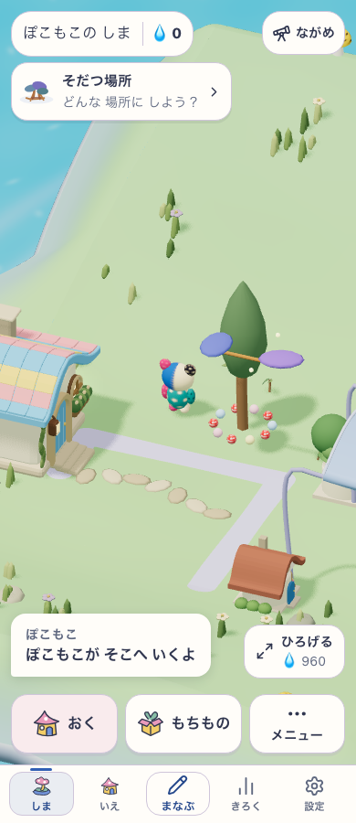

Sansu / 木陰の追加修正 / 2026-10-20
若木を足しても、育った木陰の利用と思い出の案内が残る
前回の修正で残したP01の退行に対応。若木を含む全体へ成熟を要求せず、成熟した接続部分から木陰の段階・利用先・思い出の行き先を導く。若木は元の位置・年齢で育ち続ける。
種のタップ領域も保つ
成熟部分の単純抽出だけでは、通常床に追加される大きな樹冠が、斜め45度の視点で近くの種を完全に隠した。今回、若木が混じる通常の木陰では、元の個体の姿と地面に沿う根を使い、利用段階の維持を新しい大型樹冠の追加から分けた。透明なタップ補助領域が見える隣の品を横取りしない条件と、種・若木を選べる条件の両方を、既存の検査を変更せずに確認した。
treeFormは派生情報で、保存する項目ではない。authored worldの木は既存の原本・年齢の描画を使う。実際に成熟木を収納して支持を失ったときは、木陰が成立しなくなる。価格・学習・時計・保存形式は変更しない。
実画面

使い捨ての本人に成熟木と若木を置いた明示fixture。390/768幅のproduction previewで実際に木を選び、「ここで すごす」から木陰へ移動し、P01の利用receiptを確認した。対象版・delivery flag・candidate ID・学習正本保持はブラウザ記録に固定。
検証
Node 22で対象50テスト・6ファイルPASS。前回の期待失敗テストを通常の回帰テストに変更し、木陰利用・思い出の案内・JSON復元・若木の成熟・成熟木の収納を確認。種のタップ検査は320/390幅×4角度でPASS。既存のauthored forest検査も含む。型検査・production build・アセット容量もPASS。
同じ最終コードで花5株の屋根と、脇の木がある回廊も390/768幅で実利用までPASS。木陰と合わせて計6ケース。旧探索のスモーク初回はwide portraitのlight bridgeで1500msの次問待機timeoutが1件あり、失敗ログを保持。再検査の結果は下の検証記録を参照。花と回廊の最終候補の記録。
最終のverify:coreは651ファイル・5,526テスト、docs/current-ui-entry/lint/型検査/build/アセット容量を含めPASS。classic smokeも全件の再実行でPASS。初回timeoutの原因は確定していない。確認結果と入力hashは検証記録へ集約する。未実施の実機・子どもの観察・更新確認を、このローカルPASSへ含めない。生ログはローカルの output/island-shade-fix/ に保持。
適用範囲と文書同期
追加/成長/収納の遷移はdomain検査、実画面はfixtureで作った混在木陰の利用の証拠。新規旅程での実取得・offline再読込・PWA更新・本人端末・子どもの理解/再訪は未確認。公開版への切替、commit、pushは行っていない。
成長と描画の規則を成長規則と仕様52へ反映。保存schema・運用手順の変更はないため長期memoryやmigration仕様は更新しない。前回の未完記録は、その時点の証拠として保持する。